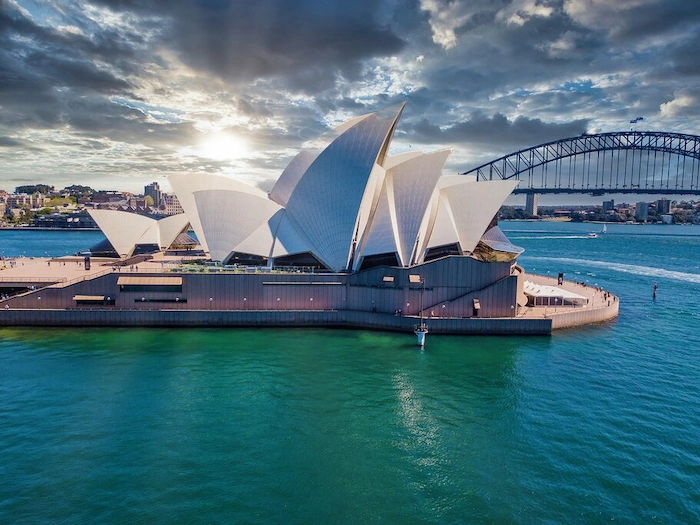

My favorite city
My name is Khant Min Myat. I am from Myanmar and now I am living in Phuket, Thailand.
My favorite city is Australia. It is a unique country and the world's smallest continent, located between the Indian and Pacific Oceans. Often called " The land down under," it is famous for its diverse landscapes, ranging from tropical rainforests and vast deserts (the outback) to beautiful sandy beaches. Australia is home to iconic wildlife found nowhere else on Earth, such as kangaroos, koalas and platypuses.
